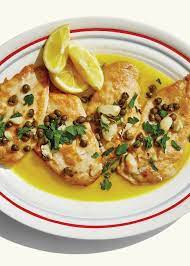

Chicken Piccata

These quick and easy pan-fried chicken breasts are topped
with a simple pan sauce made with capers, butter, white wine,
and lemon juice.
Chicken Piccata is one of my all time favorite dishes.
Tender chicken breasts are dredged in a lemon pepper flour
and seared until golden. The chicken is then simmered in a
fresh lemon caper white wine sauce. Serve this easy (yet
seemingly fancy) dish over pasta or mashed potatoes to
impress your family and friends
Chicken Piccata (or any piccata such as veal piccata) is a
dish that features meat pounded thin and topped with a buttery
lemon caper sauce.This lemon chicken piccata is usually served
over pasta and I prefer a thinner pasta such as angel hair or a light
linguine as its a delicate dish. It also goes great with Oven Roasted
Potatoes and a side of baked zucchini or steamed broccoli!
Ingrediants
The following is what we will need to make this dish:
- 4 skinless, boneless chicken breast halves
- cayenne pepper, or to taste
- salt and ground black pepper to taste
- all-purpose flour for dredging
- 2 tablespoons olive oil
- 1 tablespoon capers, drained
- ½ cup white wine
- ¼ cup fresh lemon juice
- ¼ cup water
- 3 tablespoons cold unsalted butter, cut in 1/4-inch slices
- 2 tablespoons fresh Italian parsley, chopped
Steps
- Place chicken breasts between 2 layers of plastic wrap and
pound to about 1/2-inch thick.
- Season both sides of chicken breasts with cayenne, salt,
and black pepper; dredge lightly in flour and shake off any excess.
- Heat olive oil in a skillet over medium-high heat. Place chicken
in the pan, reduce heat to medium, and cook until browned and cooked
through, about 5 minutes per side; remove to a plate.
- Cook capers in reserved oil, smashing them lightly to release brine,
until warmed though, about 30 seconds.
- Pour white wine into skillet. Scrape any browned bits from the bottom
of the pan with a wooden spoon. Cook until reduced by half,
about 2 minutes.
- Stir lemon juice, water, and butter into the reduced wine mixture;
cook and stir continuously to form a thick sauce, about 2 minutes.
Reduce heat to low and stir parsley through the sauce.
- Return chicken breasts to the pan cook until heated through, 1
to 2 minutes. Serve with sauce spooned over the top.